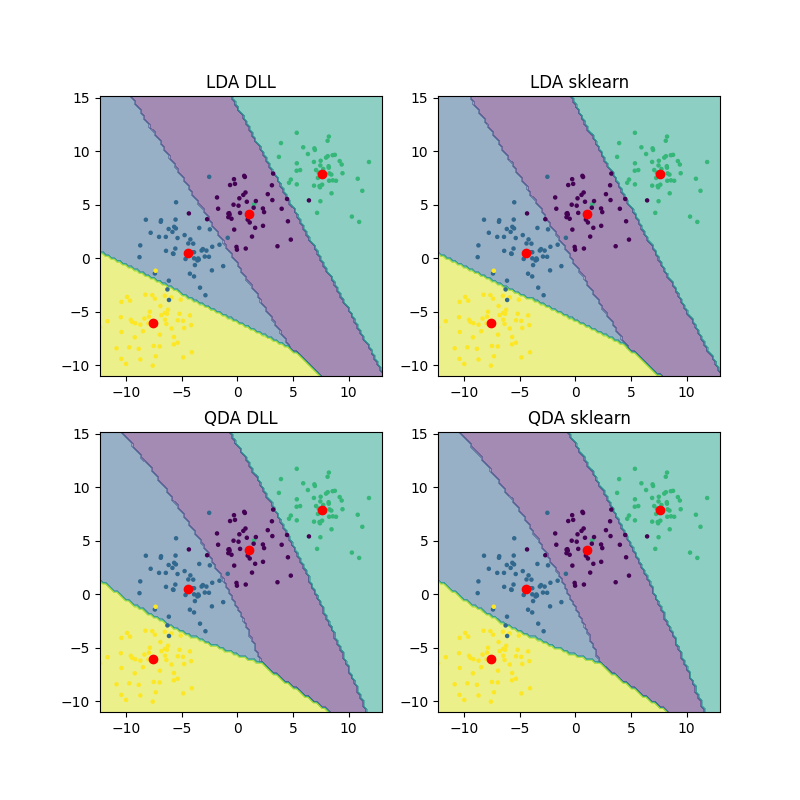

Note
Go to the end to download the full example code.
Classification with discriminant analysis
This script classifies synthetic data using linear and quadratic disrciminant analysis. In the visualisations, one is clearly able to see the difference between the algorithms using the decision boundaries.
DLL LDA accuracy: 0.955
SKlearn LDA accuracy: 0.955
DLL QDA accuracy: 0.955
SKlearn LDA accuracy: 0.955
import torch
import matplotlib.pyplot as plt
from sklearn import datasets
from sklearn.discriminant_analysis import LinearDiscriminantAnalysis, QuadraticDiscriminantAnalysis
from DLL.MachineLearning.UnsupervisedLearning.DimensionalityReduction import LDA, QDA
from DLL.Data.Preprocessing import data_split
from DLL.Data.Metrics import accuracy
X, y = datasets.make_blobs(n_samples=1000, n_features=2, cluster_std=2, centers=4, random_state=3)
X = torch.from_numpy(X)
y = torch.from_numpy(y)
X_train, y_train, X_test, y_test, _, _ = data_split(X, y)
model1 = LDA()
model1.fit(X_train, y_train)
predictions1 = model1.predict(X_test)
print(f"DLL LDA accuracy: {round(accuracy(predictions1, y_test), 3)}")
n = 100
x_min, X_max = X[:, 0].min(), X[:, 0].max()
y_min, y_max = X[:, 1].min(), X[:, 1].max()
x_grid = torch.linspace(x_min, X_max, n)
y_grid = torch.linspace(y_min, y_max, n)
Xv, Yv = torch.meshgrid(x_grid, y_grid, indexing="ij")
X_grid = torch.stack((Xv.flatten(), Yv.flatten()), dim=1).to(X.dtype)
grid_predictions1 = model1.predict(X_grid).reshape((n, n))
model2 = LinearDiscriminantAnalysis()
model2.fit(X_train, y_train)
predictions2 = model2.predict(X_test)
print(f"SKlearn LDA accuracy: {round(accuracy(torch.from_numpy(predictions2), y_test), 3)}")
grid_predictions2 = model2.predict(X_grid).reshape((n, n))
model3 = QDA()
model3.fit(X_train, y_train)
predictions3 = model3.predict(X_test)
print(f"DLL QDA accuracy: {round(accuracy(predictions3, y_test), 3)}")
grid_predictions3 = model3.predict(X_grid).reshape((n, n))
model4 = QuadraticDiscriminantAnalysis()
model4.fit(X_train, y_train)
predictions4 = model4.predict(X_test)
print(f"SKlearn LDA accuracy: {round(accuracy(torch.from_numpy(predictions4), y_test), 3)}")
grid_predictions4 = model4.predict(X_grid).reshape((n, n))
fig, axes = plt.subplots(2, 2, figsize=(8, 8))
axes = axes.ravel()
axes[0].contourf(Xv.numpy(), Yv.numpy(), grid_predictions1.numpy(), alpha=0.5)
axes[0].scatter(X_test[:, 0], X_test[:, 1], c=y_test, s=5)
axes[0].scatter([x[0] for x in model1.class_means], [x[1] for x in model1.class_means], c="red")
axes[0].set_title("LDA DLL")
axes[1].contourf(Xv.numpy(), Yv.numpy(), grid_predictions2, alpha=0.5)
axes[1].scatter(X_test[:, 0], X_test[:, 1], c=y_test, s=5)
axes[1].scatter([x[0] for x in model2.means_], [x[1] for x in model2.means_], c="red")
axes[1].set_title("LDA sklearn")
axes[2].contourf(Xv.numpy(), Yv.numpy(), grid_predictions3.numpy(), alpha=0.5)
axes[2].scatter(X_test[:, 0], X_test[:, 1], c=y_test, s=5)
axes[2].scatter([x[0] for x in model3.class_means], [x[1] for x in model3.class_means], c="red")
axes[2].set_title("QDA DLL")
axes[3].contourf(Xv.numpy(), Yv.numpy(), grid_predictions4, alpha=0.5)
axes[3].scatter(X_test[:, 0], X_test[:, 1], c=y_test, s=5)
axes[3].scatter([x[0] for x in model4.means_], [x[1] for x in model4.means_], c="red")
axes[3].set_title("QDA sklearn")
plt.show()
Total running time of the script: (0 minutes 0.461 seconds)